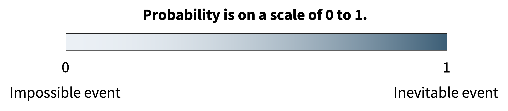
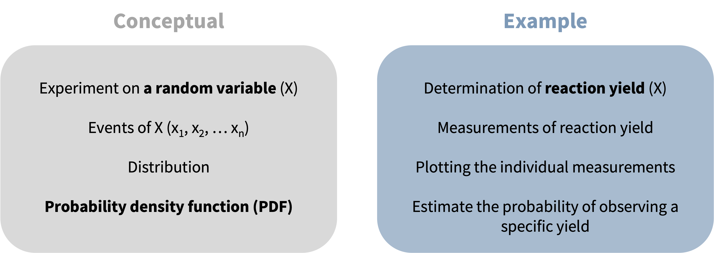
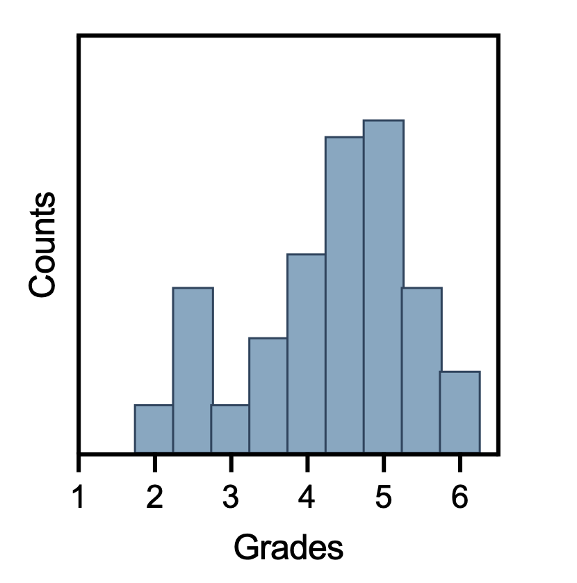
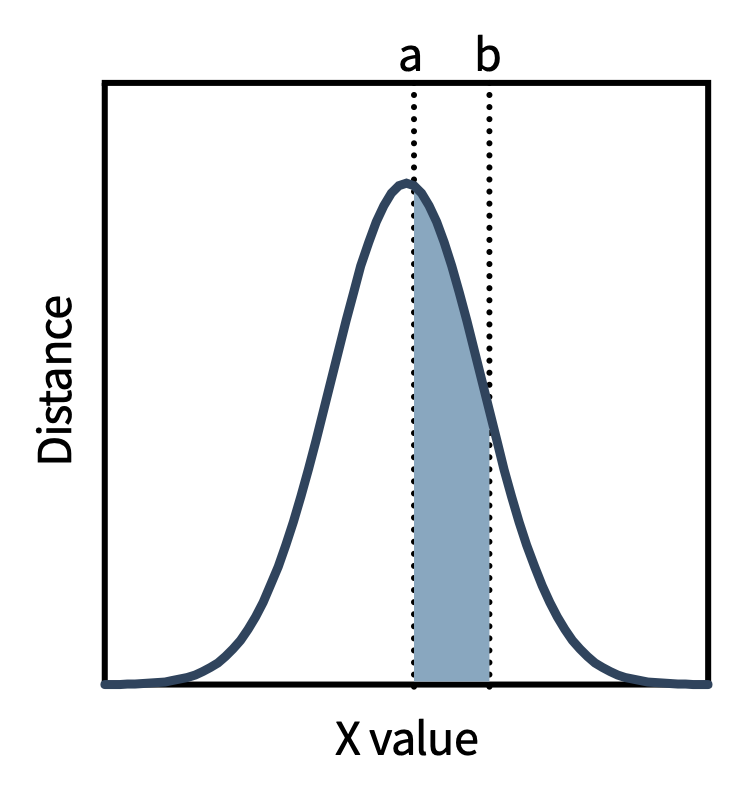
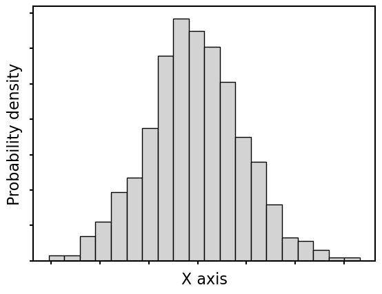
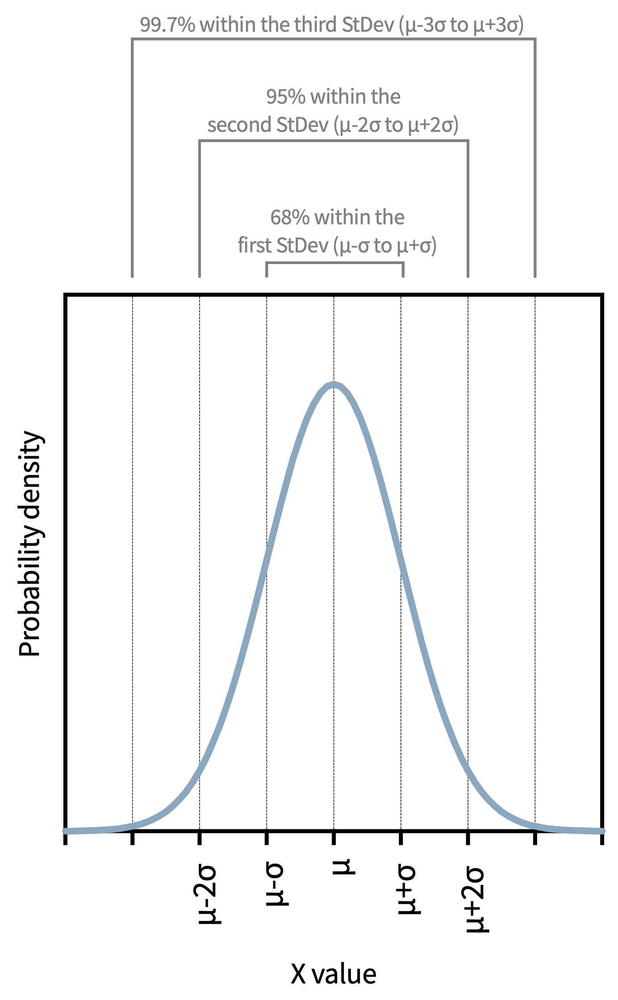
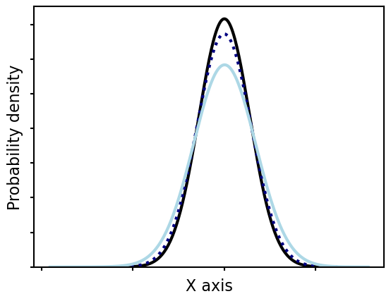
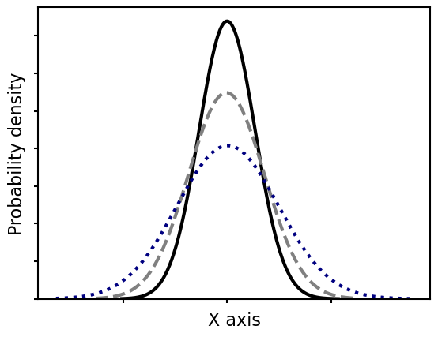
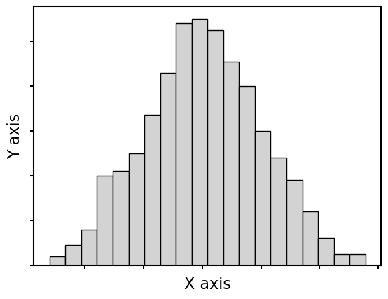
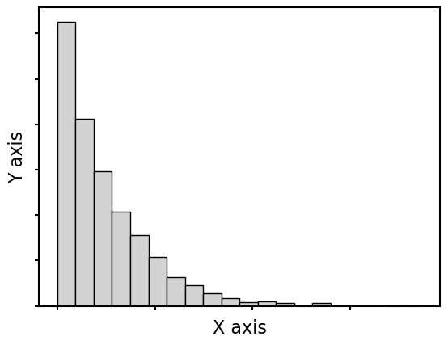

4. Probability: Frequentist
This session covers probability and statistical distributions. These topics form the foundation for every hypothesis test and confidence interval later in the course. Alongside it, the Python introduces iteration (loops and comprehensions) framed as the first tool of programmatic thinking.
Probability is fundamentally about repeating an experiment many times, and programmatic iteration is how we express repetition in code.
What is Probability?
Probability is the measure of the certainty with which we expect a particular outcome to occur. It is a number between 0 (impossible) and 1 (inevitable).

We use probability when the outcome of an event appears to be governed by chance, which, in experimental science, is essentially always the case. Understanding probability is the foundation for understanding statistical distributions, and distributions are the foundation for both descriptive statistics and inferential statistics.
The Frequentist Approach
In frequentist statistics, probability is the long-run relative frequency of an event over many repeated trials.
where frequency is the number of times an observation (\(x\)) occurs; and the frequency of \(x\) is often denoted by the function \(f(x)\).
\[P(X = x) \approx \frac{ f(x) }{n_{\text{total trials}}}\]

Numerical example:
The probability that a reaction yields above 50% is estimated as the proportion of times this occurs across many replicate experiments.
In contrast, the Bayesian approach (which interprets probability differently) is covered in the next session and again at the end of inferential statistics section.
Thinking Programmatically: Iteration
Notice the theme in that definition: “over many repeated trials.” Probability is about repetition, and repetition is the heart of programmatic thinking, which is the habit of solving a problem by recognizing a pattern and designing an efficient way for a computer to do the repeating.
A useful mental checklist before writing any code:
- What do I have, and what do I need?
- Is there repetition? — if you are about to do the same thing many times, write a loop or a comprehension.
- Choose the tool — a loop, a comprehension, or (later sessions) a function.
- Plan in plain language first, then translate to code.
The tool for repetition is the for loop. range() generates a sequence of integers the range function can take two or three inputs: start, stop exclusive, and an optional step (in that order).
A for loop runs a block once per item; the loop body is indented:
A very common pattern is to build up a list across iterations:
You can loop over a dictionary (e.g. yields keyed by base) and use enumerate() to get position and value together:
List Comprehension
A list comprehension builds a list in one readable line — the same loop, compressed:
[output_expression for item in collection]
[output_expression for item in collection if condition]Converting reaction masses to percent yield (theoretical yield = 1.54 g), the long way and the short way:
Formatting numbers: f"{value:.1f}" shows one decimal place; :.2f gives two, :.4f four. This affects only the display, not the stored value.
Discrete vs. Continuous Distributions
For a discrete random variable, the probability of the variable equalling a specific value is described by the probability mass function (PMF). The total probability across all possible outcomes must sum to 1.

For a continuous random variable, the probability of observing any single exact value is zero (there are infinitely many possible values). Probability is expressed as the area under a probability density function (PDF).

For a continuous variable, there are infinitely many possible exact values. The probability of observing exactly 73.14285…% yield (to infinite decimal places) is mathematically zero. What we can meaningfully ask is: what is the probability of observing a yield between 70% and 75%? That is the area under the PDF between those limits, which is computed by integration rather than summation.
Common shapes for continuous distributions in this course:
| Distribution | Primary application |
|---|---|
| Normal (Gaussian) | Foundation of most parametric tests |
| Student’s t | Parametric tests with small n |
| Exponential | Decay processes, time-to-event data |
| Lognormal | Positive data with a right skew |
| Chi-squared (χ²) | Variance testing; goodness-of-fit |
| F | ANOVA; comparison of variances |
Simulating and Visualizing Distributions
A histogram shows the frequency of observations across bins — and “simulate many draws, then count how often each outcome appears” is exactly the frequentist idea, expressed with repetition. We can draw 1000 values from a distribution and plot them:

The Normal Distribution
The normal (Gaussian) distribution is the most important distribution in this course. It is symmetric and bell-shaped, centered on the mean (μ) with spread described by the standard deviation (σ).

The 68–95–99.7 rule:
- 68% of observations fall within μ ± σ
- 95% of observations fall within μ ± 2σ
- 99.7% of observations fall within μ ± 3σ
We can check this rule by simulation — draw a large normal sample and count the fraction within each band (probability as a long-run frequency):
The 68–95–99.7 rule enables rapid mental estimation of how unusual any observation is. An observation more than 2σ from the mean should occur only 5% of the time by chance. This is precisely the intuition behind the conventional p < 0.05 significance threshold. An observation more than 3σ away is genuinely rare (0.3%), which is why outlier detection methods often use 3σ as a threshold. Knowing these percentages allows you to sanity-check statistical results without software.
Why does the normal distribution dominate?
1. The Central Limit Theorem (CLT): regardless of the distribution of individual measurements, the distribution of the sample mean approaches normal as sample size increases. This is why parametric tests — which compare means between conditions — work even when raw data are not perfectly normal.
2. Natural prevalence: many physical phenomena, particularly measurement errors, are approximately normally distributed.
3. Mathematical tractability: the normal distribution has simple, well-studied properties that form the foundation of t-tests, ANOVA, and regression.
Describing Distribution Shape
Two additional metrics describe shape beyond mean and variance:
Skewness — how much the distribution leans to one side. Positive skew: long right tail. Negative skew: long left tail. Normal distribution: zero skewness.
Kurtosis — the “tailedness”. High kurtosis (leptokurtic): heavy tails, sharp peak. Low kurtosis (platykurtic): light tails, flat peak.

Quantiles divide a distribution into equal-probability intervals. Quartiles (Q1 = 25th percentile, Q2 = median = 50th percentile, Q3 = 75th percentile) are the most commonly used.

The Student’s t-Distribution
The t-distribution resembles the normal distribution but has heavier tails (kurtosis) — more probability is assigned to extreme values. Its shape depends on the degrees of freedom (df = n − 1).

At small n, the tails are substantially heavier than the normal distribution. As n increases, the t-distribution converges to normal.

With few observations, the population standard deviation must be estimated from the data, and that estimate itself carries uncertainty. The t-distribution accounts for this by spreading probability into the tails: extreme observations are more plausible because the spread could be larger than estimated. For n > 20, the difference between t and normal is small. But for n = 3–5 (common in chemistry), using the normal distribution would significantly underestimate uncertainty.
Common Violations of Normality
- Fundamentally discrete or categorical data
- Non-linear responses (saturation, threshold, sigmoidal)
- Values approaching a natural limit (enzyme activity near Vmax, survival times)
- Very small sample sizes (n < 5)
- Uncontrolled factors introducing structured variability
- Extreme outliers
When normality cannot be assumed, non-parametric alternatives are required — covered in Session 11.
Transforming Data
Sometimes a non-normal variable can be transformed to approximate normality. The most common example is the log transformation: if raw data follow a lognormal distribution (right-skewed, positive values only), taking the logarithm produces approximately normal values.


Transformations must be justified: they change the interpretation of results, and some are standard practice in specific fields while others would be considered arbitrary without strong prior reasoning.
Programmatic Thinking: The Method
The iteration above is the first piece of a reusable habit you will lean on for the rest of the course. The common patterns:
| Pattern | Construct |
|---|---|
| Apply the same operation to every item | for loop or comprehension |
| Filter items by a condition | comprehension with if |
| Accumulate a running total | loop with a counter |
| Compare consecutive items | range(len(data) - 1), use [i] and [i+1] |
| Repeat a multi-step calculation | (Session 7) write a function |
The scaffolding approach for any non-trivial task: solve one case → test it → wrap it in a loop → test again → (later) refactor into a function. This same decompose-and-test habit is exactly what lets you direct — and check — code written by an LLM.
A worked example combining loops, dictionaries, and f-strings — a molecular-weight calculator with a nested loop (outer over compounds, inner over elements):
Loops are also the everyday way to add computed columns to a DataFrame:
- Frequentist probability = long-run relative frequency (repeat the experiment many times).
- Discrete variables → PMF (binomial, Poisson); continuous → PDF (normal, t, …).
- The normal distribution dominates via the Central Limit Theorem (which applies to means, not raw data); remember 68–95–99.7.
- The t-distribution has heavier tails at small n.
- Programmatic thinking: spot the repetition → use a loop or comprehension; plan first, then scaffold (solve one case → loop → refactor).
In person session
TBD